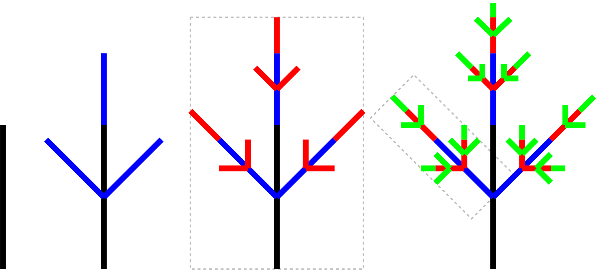
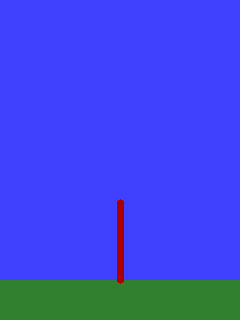
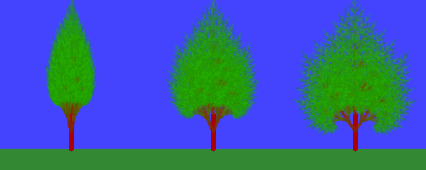

Fák rajzolása
Czirkos Zoltán · 2019.02.27.
Különféle fafajtákat kirajzoló program. Éljen a rekurzió!
Ha fogunk egy függőleges szakaszt (fekete), aztán abból oldalra kiindulva rajzolunk két újabb, rövidebb szakaszt, meg fölfelé is egyet (kék)… Aztán az így kapott szakaszokból kiindulva megint rajzolunk szakaszokat (piros), amelyek ugyanolyan szögben állnak az előzőekhez képest, mint az az elsőhöz; aztán meg az ekkor kapottakból ugyanúgy (zöld) és így tovább… Akkor kapunk egy fát. Itt a jobb oldali rajzon egy kék–piros–zöld mini fa pont úgy néz ki, mint a tőle eggyel balra lévő piros–kék–fekete fa, csak kisebb.
 Ha mindezt úgy csináljuk, hogy a kiinduló vonal még vastagabb legyen, utána egyre vékonyabb vonalakat rajzoljunk; a kiinduló vonal még barna legyen, utána egyre zöldebb vonalakat rajzolunk, akkor már kész is van a fánk. Csak tovább kell vinni a rajzolást, nem 3 lépésben rajzolni az ágakat, hanem mondjuk 8-10 lépésben, és akkor tényleg fa lesz, nem pedig antenna.
A fát rajzoló függvény nagyon egyszerű. Kap egy képernyőkoordinátát, ami a fa törzsének
kiindulópontja. Kap ezen kívül egy szöget, továbbá egy hosszt. Ez egyértelműen meghatározza a
törzs helyzetét. Megrajzolja a törzset egy szakasszal. Utána pedig fogja az ágak tömbjét, és
meghívja újra saját magát: de eltérő koordinátákkal (mert a törzs valamely pontjáról indul ki az
ág), eltérő szöggel (mert valamerre nő az ág a törzshöz képest), és kisebb hosszal (mert az ágak
egyre rövidebbek). A rekurziót az n paraméter csökkenése állítja meg. Így:
FÜGGVÉNY fát_rajzol(n, x, y, szög, hossz, ágak)
HA n<0, VÉGE
szakasz(x,y-ból, adott hosszal és szögben)
CIKLUS végig az ágakon
fát_rajzol(n-1, x+eltérés, y+eltérés, szög+elhajlás, hossz/rövidülés, ágak)
CIKLUS vége
FÜGGVÉNY vége
A fák változatosságát az ágak paraméterei adják. Ha nagy szögben hajlanak el, terebélyes fát kapunk, ha kicsiben, inkább magasat. Ha az ágak aljáról indítjuk az elágazásokat, bokrokat rajzol a program. Ha gyorsan rövidülnek az ágak (a „szülő” águkhozképest), akkor facsemetéket kapunk. Az egyes ágak tulajdonságait ezért eltároljuk egy struktúrában:
typedef struct AgAdat {
double doles; /* merre dől az eredeti ághoz képest (radián) */
double helyzet; /* honnan indul ki (0 = legalul, 1 = legfelül) */
double rovidules; /* mennyit rövidül (0 = semennyit, 1 = lenullázódik) */
} AgAdat;Minden ágból három másikat indítunk ki, egyet balra, egyet felfelé, egyet pedig jobbra (tehát a szögeket így kell majd beállítani). A rajzoló függvény az ágak tömbjét fogja átvenni. További változatosságot lehet bevinni a fák színének beállításával, az egyes ágak dőlésszögének kisebb véletlenszerű módosításaival és így tovább. Hogy a sok véletlenszámot és lehetséges számtartományt könnyen tudjuk kezelni, érdemes egy intervallumot megadó típust is létrehozni, és egy olyat átvevő véletlenszám-generátor függvényt írni:
typedef struct Intervallum {
double min, max;
} Intervallum;
double myrand(Intervallum i) {
double rand1 = rand() / (double) RAND_MAX; /* ez 0 és 1 között lesz */
return i.min + (i.max-i.min)*rand1; /* beskálázva min és max közé */
}Ezt használja a fentebb bemutatott pszeudokódot megvalósító, fát rajzoló függvény. Ebben átveszünk egy átlátszóság és egy zöld szín és egy sugár paramétert is. Az átlátszóság 1-től indulva csökken: a magasabban lévő ágak, levelek halványabbak. A sugár úgyszintén csökken a rekurzió mélységével (tehát a kisebb ágak felé). A zöld szín egy kívülről érkező adat: 1 a legélénkebb zöld, a kisebb számok sötétebb leveleket eredményeznek.
void fat_rajzol(SDL_Surface *screen, AgAdat agak[], int agszam, int n,
double x, double y,
double hossz, double szog,
double atlatszosag, double zold, double r)
{
if (n < 0)
return;
int atlb = atlatszosag * 255.0, vorosb = atlb * 2/3,
zoldb = (0xFF-atlb) * (zold + myrand(szinfuzzy));
myline(screen, x, y, x+hossz*cos(szog), y-hossz*sin(szog),
vorosb<<24 | zoldb<<16 | 0<<8 | atlb<<0, r);
for (int i = 0; i < agszam; ++i) {
fat_rajzol(screen, agak, agszam, n-1,
x + hossz*agak[i].helyzet*cos(szog),
y - hossz*agak[i].helyzet*sin(szog),
hossz * (1-agak[i].rovidules),
szog + agak[i].doles + myrand(dolesrand),
atlatszosag * 0.8, zold, r * 0.88);
}
}Ebben az ág hosszúságának és szögének függvényében kiszámítjuk az új koordinátákat. Csak
arra kell figyelni, hogy matematikailag az y tengelyen a pozitív előjel
felfelé elmozdulást jelent, a képernyőn lefelé elmozdulást, ezért kapunk egy negatív előjelet.
A fa rajzolása közben a törzs barnájától a levelek zöldjéig egy színátmenetet
kell létrehozni. Ezt is az átlátszóság paraméter segítségével érjük el: ahogy az
átlátszóság csökken, úgy csökken a szín vörös(-es barnás) komponense, és úgy erősödik
a zöld komponense. Ezt állítják be a vorosb és zoldb bájtok,
amelyekből a myline() függvény paramétereként megszületik a 0xRRGGBBAA
alakú, 32 bites színkód. A myline() függvény egy adott vastagságú szakaszt
rajzol – azért volt rá szükség, mert az SDL_gfx hasonló célú függvénye hibás. (Legalábbis
azé a verzióé, amelyikkel próbáltam.)
A paraméterek hatása a fa alakjára:
A teljes program letölthető innen: fa.c. A működés egy-két további részletével kapcsolatban lásd a forráskód kommentjeit! Feladat: átírni a programot úgy, hogy egyesével rajzolódjanak ki a szintek, mint a fenti animációban. Vigyázat, át kell gondolni!